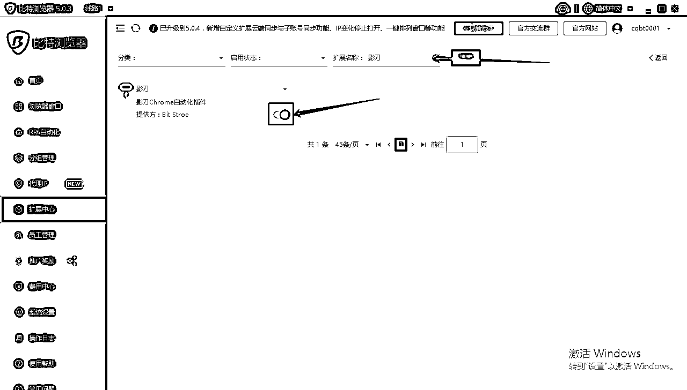
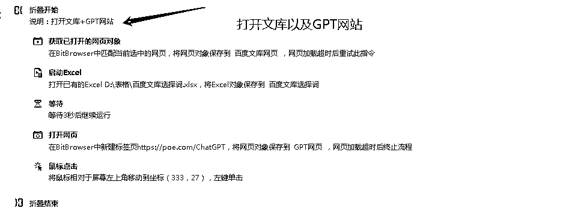

来源：https://px1hmn4sqj.feishu.cn/docx/KIHRdQMZDokB2WxaXtfcw1Yrn5b
百度墨斗鱼其实是一个很久的小项目，老项目新玩法。新玩法指的是利用指纹浏览器+影刀RPA工具+GPT，帮助我们不费脑、不费时间，挣点小钱。该玩法也可以用于其他项目的，如上期航海里面的咸鱼二手书，获取书籍ISBN编码以及去水印上下货，高级进阶玩法的话，可以设置自动发货以及自动回复等等，自动采集/定时发布小红书笔记；店铺单号填写自动发货；店铺自动回复等等，多种应用场景都可以利用这种玩法。
接下来，深度剖析下如何用影刀RAP，帮助我们不费脑和不费时间的挣钱~~~
本人零基础学习RPA，学习方式主要是在影刀官网里面看课程，后面根据自己的需求，慢慢搭建RAP流程。官网上面的课程，基本上能解决日常工作80%以上的问题
| 区别 | 创作活动 | 日常上传 |
|---|---|---|
| 入口 | 在首页找到创作活动，通过创作活动上传文档 | 在作品管理里面找到文档，里面有新增文档 |
| 审核 | 审核稍微严格点），审核通过后，文档流量有会扶持 | 该入口审核不严格，上传了基本上能过，审核通过后，文档流量不会有扶持（考验选题的方向） |
| 日上传文档数量 | 最低是每天上传10篇 | 最低是每天上传50篇 |
| 收益 | 该入口的收益=分发收益+VIP会员下载奖励+审核通过阶梯奖励 | 该入口的收益=分发收益+（售价*下载量） |
| 入口开通要求 | 直接有上传入口 | 新开通的店铺，没有付费文档入口的权限，文档需要被下载到一定的数量后才有付费文档入口 |
总结：1.如果是新开通的店铺，优先选择创作活动（多账户运营，一人可认证5个账户，5个账户上限就是50多篇）
2.如果是深耕某个赛道，对选题有一定的深度和了解，优先选择日常上传（多账户运营，一人可认证5个账户， 5个账户上限就是240多篇，大力出奇迹）
3.在创作活动里面的题目，都是近期检索量比较大的，所以审核通过后，文档流量有会扶持
我目前有7个账户，每个账户的通过率在30-40%左右，收益大概在1000+左右。规则未更改的时候，收益差不多有8000+左右，7月4日百度文库更新了规则，收益就掉了很多，想提高收益，就要提高通过率。有小伙伴可以尝试下用调教的方式，出文档上传，上传文档时，含有-回复，+，-，x，政F，空格，疾病，G家，条约等等，都是会审核不过，审核结果一般在1个工作日到7个工作日之间，通过调教的方式，通过率会提高很多~~~~
工具：影刀RPA+比特浏览器(指纹浏览器)+GPT(科学上网)+百度账户
进阶工具:服务器渲染+服务器推出登录用户（后面部分有介绍）
工具网盘链接链接：https://pan.baidu.com/s/1miOFSMYTtZUdFO7n6mPnCw?pwd=lytl 提取码：lytl
指纹浏览器（Fingerprint Browser）是一种工具，用于在浏览器级别模拟和管理浏览器指纹。浏览器指纹是由浏览器生成的独一无二的标识符，用于识别设备和用户。指纹浏览器可模拟和管理多个浏览器指纹，从而使用户在网络上匿名并防止被跟踪。在跨境网络中，它能够模拟多个浏览器指纹，提供与不同操作系统、浏览器类型、语言、时区、分辨率等相关的功能。指纹浏览器还可以自动管理浏览器指纹，从而减少浏览器指纹被检测到的可能性，提高用户的隐私安全性。
登陆浏览器→找到浏览器窗口→点击创建窗口，就看见下面这张截图，按照截图里面红框依次添加账户步骤,注意平台URL这个一定要填写，已启动浏览器，就会立马打开网站的
注意：如账户的个数未超过10个，就暂时不用开通会员，非会员可以添加10个账户，每天打开窗口最大次数是50次，超过总次数当天无法打开，第二天恢复~~~
在比特浏览器里面找到扩展中心→扩展名称里面搜索“影刀”→打开影刀自动化插件的开关

在浏览器窗口里面，打开任意窗口，在新的浏览器里面输入chrome://extensions/查看插件有没有安装好，这个时候别急，还有最关键的一步，影刀里面需要安装比特浏览器，如没有这步，在打开网页的时候找不到比特浏览器，就如下面截图里面一样的
3.1打开任务管理器→找到BitBrowser（即当前比特浏览器）→鼠标右键找到“打开文件所在位置”，如下图，待会就需要把这个位置的文件安装到影刀里面
3.2打开影刀里面→鼠标点击头像→找到工具→自动化插件。如截图

3.3点击自定义浏览器自动化→手动选择→在下面截图的红框里面复制第一步找到浏览器的文件夹位置→选择第二个→点打开→安装成功后会有成功提示。最后，可以在打开网页里面验证下有没有比特浏览器的选项
创作活动入口流程图（步骤分解）先以创作活动入口为例，之后附上日常上传文档流程图
不同颜色的框代表重要的流程节点，共分为4大类流程，
一类用户，二类表格，三类是重点影刀运转，四类本次完成开启下轮流程
一类蓝色框，这个就是我们之前在比特浏览器上面建立的5个用户，比如结束了上一个用户后，立马就回到了这个流程，重复之前流程，直到我们把5个用户的流程走完了，才结束，在此前如有遇到某个用户流程有异常，我们的Try Catch容错率就会工作，创建新的环境，重新运行有异常的某个用户流程
二类绿色框，是存储内容的功能，在【判断题目是否含词根】这个步骤里面就需要用上这个，词根就存储在Excel表格里面，可以随时增加和删除词根，同时也可以将上传成功的文档题目写入到表格里面，方便我们后续查看
三类红色框，粗看是很复杂，细看的话，就分4个大的步骤
步骤1：判断题目里面含不含有Excel表格里面的词根，含有的话，继续判断能不能点上传按钮，如有不能继续回到获取题目的步骤
步骤2：将题目直接发送到GPT里面去，等待GPT的回复，如回复里面有GPT回答内容是否有违禁词或者不能回答的词，直接删除GPT回复，又回到获取题目的步骤
步骤3：如GPT回答内容不含有违禁词或者不能回答的词，将题目和内容写入word里面，并稍微美化下word，直接上传美化后的文档，
步骤4：点击大分类元素位置，之后输入上传文档前的页码数，就回到了上传文档前的题目位置，再判断此时有没有到上传文档的限制数量，没有的话继续回到获取题目的步骤
四类黄色框：是该用户已经到了上传文档的限制数量，那么我们就要结束这个用户流程，开启打开下个用户
注意：1.大分类元素一共有12个分类（可以理解成12个不同赛道，每页有20个题目，一共有10页）到第10页，就会自动获取下一个分类的题目
2.每次上传文档后，我们回到的位置永远是第1个分类，第1页。所以，就需要回到了上传文档前的题目位置
容错率指的是因为某些原因，导致我们的流程异常或者无法进行到下一步，影响运行的稳定性，那现在就不用担心了，容错率就是来解决这类问题的，我们可以通过针对性的处理，来减少流程停止或者奔溃的情况，从而提高整个流程的稳定性和连续性
简单的理解：当我们的流程遇到到异常，使用Try Catch容错率后，使整个流程在一个新的环境中，从新开始。
影刀流程展示，按照之前的画的流程图，共分为四个部分
一类用户，二类表格，三类是重点影刀运转，四类本次完成开启下轮流程

为了让大家更直观的看到影刀是怎么样运行的，特意录制了运行视频
最简单的总结：
1.获取excel表格里面的题目，将题目发送到GPT里面，判断GPT回复的内容里面有没有违规或者是不能回复的答案，将题目和答案写入到word里面，之后上传文档，又回到获取excel表格里面的题目，反复循环
2.这个可以把创作活动的所有题目收集到excel表格，挑选出来GPt能回答词根，上传相应的文档
直接断开远程桌面，简单的可以理解成，没有了“显示器”，ECS上的图像都是黑的，所以一些图像相关的操作都会无法使用。所以下面三种方法，需要实现的是：能够自然断开，但会创建一个虚拟的“显示器”，它能够渲染图像
2.1官方脚本remote_close
上述脚本是写在官网上的，但其实还不够完整，原因是有些电脑，虚拟的“显示器”的分辨率跟远程连接上看到的分辨率不一样，这可能会导致很多不可控的问题，比如因为显示错乱，某些重要按钮被挡住了。
2.2流程中添加指令：锁屏运行 ，使用限制：需要在执行到锁屏运行指令前，远程连接一直都是连着的（第二选择）
2.3用自动渲染器，打开图片上的软件，点击登录，登录的用户名是服务器的用户名以及密码（强烈推荐）
问题：锁屏似乎无效,排查思路:
1、搭建打开网页截图流程应用，流程是在流程前等待10秒，之后在2分钟内打开新闻网页，每隔30秒截一张图
2、启动该流程后，立即执行官方脚本remote_close/锁屏退出，然后等待大概1分钟，再连接服务器
3、查看截的4-5张图，有没有黑的？ 分辨率是否一样？
结果分析：
1、如果3中有黑的，说明退出使用方法不起作用（尝试两种退出方法）
2、3中分辨率与未退出时不一样，这种一般是用脚本退出的，解决方法： 换RDP锁屏退出
如果以上，都尝试了，那就用第三种方法（个人强烈推荐第三种方法）
服务器里面运行影刀，我绝大部分的都是用服务器+触发器运行影刀，这样的好处是不用占用电脑，对服务器的配置的话，只要不卡，运行不复杂的流程，1核1G的配置就可以了，在天翼云服务器上面能领取两个月的试用时间https://www.ctyun.cn/h5/activity/trial/personal?platform=pc
（如何使用服务器可以在星球里面检索下相关的文章）
1.定时触发器的含义
含义：让影刀在某个时间段执行某个应用流程.如截图里面的，让影刀在每天的08时16分，去执行文库这个流程，然后影刀每天就这个时间段去执行，如果是这段时间不想它执行，就把旁边的开关关了，就不会执行
在建立定时触发器的时候，搭建好的流程一定要点击发版这个，不点发版在应用框里面是找不到搭建好的流程
2.运行错误/成功邮件提醒
由于我们是断开远程桌面。没有办法看到详情的运行流程，不知道应用有没有运行完或者有没有运行中断，这时候就需要有有人把运行结果告诉我们
运行错误邮件设置：打开影刀里面→鼠标点击头像→找到设置→运行错误处理，运行错误邮件通知只有在断开远程桌面才有效，其他的时候无效，邮件里面会告诉我们是步运行错误。同样，在我们运行完整个流程后，也可以直接在流程里面写入一个邮件通知指令，告诉我们运行成功。
下面截图就是运行错误发送的邮件提醒，里面提示你，是哪个应用以及异常原因是什么
以上就是不费脑、不费时间可以实现做合格的甩手掌柜，除了墨斗鱼这个小项目，还有很多应用场景可以用上影刀工具，感谢生财平台，让我在挣钱海洋里尽情的遨游！！！！